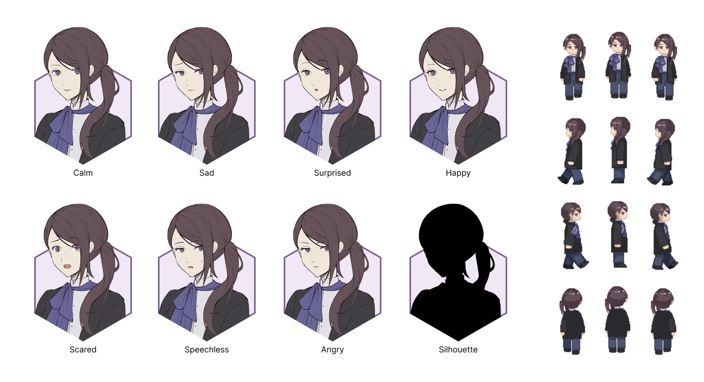

Prototype that demonstrates the game flow
character
Mary, the player-controlled protagonist, is a worker of the gallery. Although she is not particularly outgoing, Mary is a reliable colleague and friend who is always willing to lend a hand to people around her. She is also a bold yet detail-oriented person, who moves through the world with both confidence and precision, making decisive choices while never losing sight of the smallest details. This balance of bravery and sensitivity shapes her journey as she steps deeper into the mysteries hidden within the gallery.
A collection of character art asset of The Cursed Gallery
map design
This pitch is inspired by both three-panel folding screen paintings and surrealist artworks. In many folding screen pieces, each canvas presents its own distinct composition, yet all three panels remain deeply interconnected through a shared theme or narrative. Building on this idea, our team planned out a puzzle game in which the player can shift between two or three parallel environments that are visually different but thematically linked. This mechanic allows the player to explore multiple perspectives of the same world, uncover hidden relationships, and solve puzzles by navigating across these interconnected spaces.
In terms of specific art direction and atmosphere of the in-game environment, we wish to bring a surreal game experience to our player that blurs the boundary between reality and dream. The gallery (real world) is rendered in a more polished and detailed illustrative style, whereas the painting world adopts a distinctly pixel-art aesthetic. This deliberate contrast reinforces the dream-like quality of the painting world and highlights the separation between the protagonist’s reality and the surreal spaces she steps into.
 >
>
All the advanced filters are presented to the user at once, making the searching experience visually overwhelmed.
Future Development
In my future projects I want to improve on several points:
1. Expand puzzle complexity by introducing multi-step interactions, environmental triggers across worlds, and puzzles that require coordinating parallel spaces.
2. Enhance environmental storytelling with more narrative clues, character-driven moments, and world-building elements embedded in both reality and dream environments.
3. Build the game and conduct user testing to evaluate navigation clarity, difficulty balance, and overall player experience within the surreal multi-world environment.